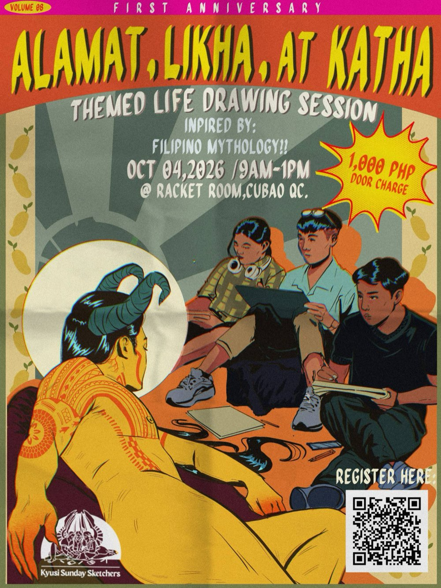
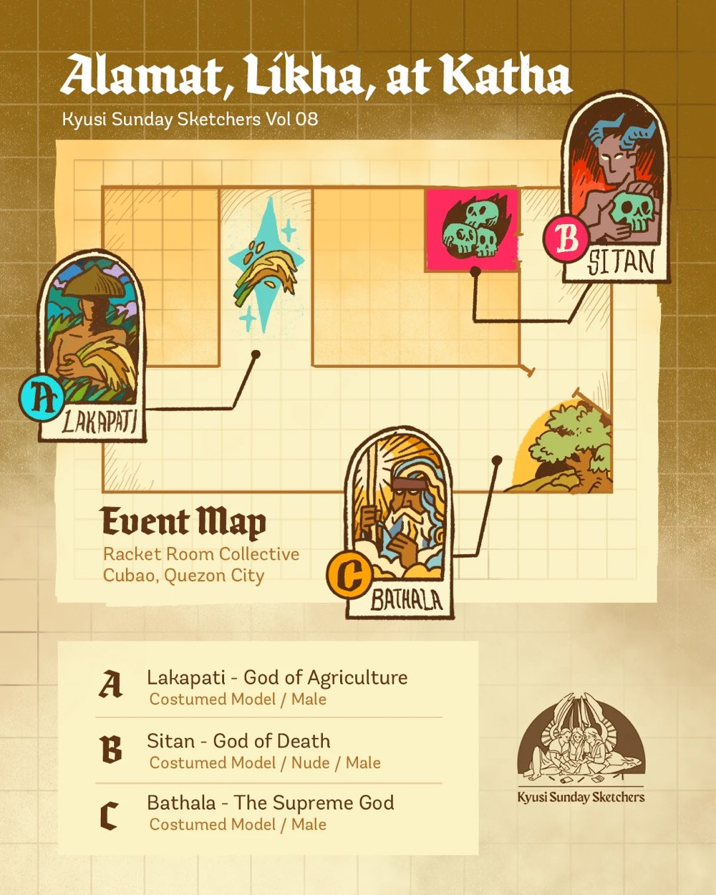

|
KYUSI SUNDAY SKETCHERS
ALAMAT, LIKHA,
AT KATHA
Vol. 08 · First Anniversary
|
|

|
|
Hi, KSS Sketcher! 👋
We’ve received your registration and payment, and your slot is officially confirmed! 🎉
We’re excited to have you with us for our first anniversary session. Here are some important reminders before you come.
|
|
🎨 Event Details
📅 Sunday, October 4, 2026
⏰ 9:00 AM – 1:00 PM
📍 Racket Room Collective, Cubao, Quezon City
|
|
🗺️ Event Map

|
⏰ Arrival & Check-in
Please try to arrive around 8:30–8:45 AM so you have enough time to enter the venue, check in, find your drawing area, and prepare before we start at 9:00 AM.
Running late? No worries! Just let us know through our Instagram. When you arrive, please approach the KSS team or Information Desk first. If a pose is already in progress, enter quietly and avoid interrupting the session.
|
✏️ Bring Your Own Materials
This is a traditional-art-only session. Please bring your own sketchbook, paper, pencils, pens, coloured pencils, or other traditional drawing materials you need.
|
🍪 Food & Water
We’ll provide light snacks and drinking water during the event.
Feel free to bring your own food or snacks too — and if you bring extra, you’re more than welcome to share with your fellow sketchers! 🥰
|
🧹 CLAYGO — Clean As You Go
Please keep your drawing area clean throughout the session and clean up after yourself before leaving. Dispose of rubbish properly and leave your area tidy.
|
|
🧑🎨 Model Safety & Consent
Model safety comes first. Always.
- If a model feels uncomfortable or uneasy, they have the right to stop or end the session.
- Specific pose requests require the model’s explicit consent.
- Pose pegs should be sent through Instagram.
- We recommend a minimum of 3 minutes per pose, depending on the model’s capacity and comfort.
- Each session will last approximately 2–3 hours.
- Artists are free to leave at any time for any reason.
No unwanted physical contact. Please ask for consent before any physical contact, including hugs.
|
🔞 Room 2 — 18+ Only
Attendance in Room 2 is strictly limited to confirmed participants aged 18 and above.
Please remember that KSS is a life drawing session, not an art workshop.
|
📸 Photography & Documentation
Photos may be taken during and after the session for KSS documentation and social media.
A designated event phone will also be used to capture work-in-progress sketches. After the session, the model will decide which photos they are comfortable sharing with artists.
If you requested for your photos to be blurred, we’ll respect that request.
|
🏳️🌈 Keeping KSS a Safe Space
KSS is a space for self-identifying LGBTQ+ people, regardless of gender identity, trans status, queer expression, race, or background.
We have zero tolerance for sexual harassment or discriminatory behaviour, including unwanted touching, catcalling, sexual comments or jokes, racism, sexism, classism, homophobia, biphobia, transphobia, ableism, fatphobia, and other oppressive behaviour.
Please avoid assumptions about someone’s identity or pronouns, and be mindful that everyone’s experiences are different.
|
🫶 Have a Concern?
If you feel uncomfortable, unsafe, or witness something concerning, please approach any KSS organiser or the Information Desk immediately.
You don’t need to handle the situation yourself. We’re here to help.
|
|
🔇 During the Session
Please keep conversations and unnecessary movement quiet while people are sketching, especially during longer poses. Feel free to socialise during breaks — just be mindful when a pose is in progress.
|
🖼️ Latag Session
At the end of the event, we’ll have our Latag Session, where artists showcase their work to the model.
As part of our KSS tradition, the model gets to choose one artwork from each artist and receive it as a gift. 💛
|
🅿️ Parking
There is no dedicated parking available at the venue. If you’re bringing a car, please check nearby parking options beforehand.
|
|
See you this Sunday! 🎨
Thank you for joining us and helping us celebrate one year of Kyusi Sunday Sketchers.
Let’s make this a fun, respectful, safe, and creative session for everyone — and give our models the same care and respect we give to the art.
Questions? Email us at kyusisunday@gmail.com or message us on Instagram.
KSS Team
Kyusi Sunday Sketchers
Vol. 08 · First Anniversary
ALAMAT, LIKHA, AT KATHA
|